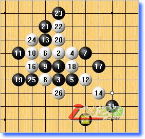
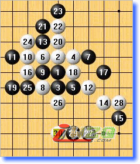
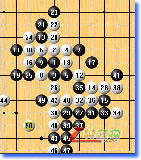
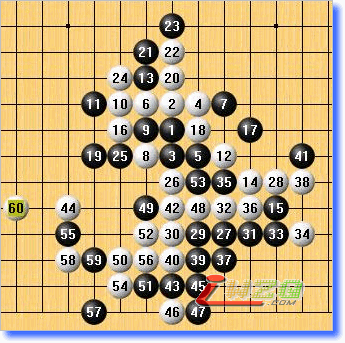
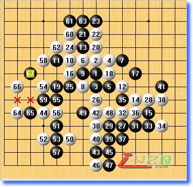

不知道是谁的高手给我上的一课
#1 不知道是谁的高手给我上的一课 作者：有志青年 发表时间：2007-12-15 20:26:52

平淡的开局，16手变招后对方等待我的失误，我的19手自认为不强，主要是不想让自己的棋被阻断，算是争取一些小小的势吧。正常演变到25手，26再次出乎我意料，再次利用他自己的经验给我下了一个套，他给了我一个让我进攻的局面来骗我时间，哭泣~

下来我想继续扩展优势，持续做棋，想占住黑19下面那个点来使自己的棋联系起来，不过时间的问题，我到39手的时候开始读秒了，所以只好很不甘的走了那个41。

白现在终于开始露出其阴险狠毒的一面，连续两手棋把我逼到一个山穷水尽的地步，估计是我的45跟47欠考虑，总之当白走出50的时候我感觉基本没防了。其中一个防的必杀我自己搞出来了，

我选择另外一个黑防点，对方长考四分钟，杀了出来。

我承认我对棋的理解不深，不过这位高手真的让我很服，不是说他胜了我我才服，而是我觉得跟他下棋真的成长很多，这局棋我起码学到了两点，其一，当局面复杂的时候，可以给对手一个局面，让他感觉就象是在吃鸡肋，心里难受了，难保不出错，而且进攻方比较耗时间，自己隔岸观火之下总会捞到一些便宜，利用对方的进攻加厚自己的外势，确保自己在有机会时有足够的材料做出棋形。
其二，五子棋就是一个连接的游戏，谁的连接好，谁就有资格获胜，这局的对手给我上了一场很生动的课，44做棋的时候，我怎么会想到他将来成杀的时候居然把第10（第一种杀法）或者第24手（第二种杀法）给联系起来了？这声东击西透出来的老练与算力真的是我现在不能够比拟的，当对手走出58的时候，我已经彻底的臣服，这一局，真的值得我好好研究一下。
我平常不写棋评的，只是这局让我感悟真的太多，忍不住写了出来，大家见笑了。
#2 Re:不知道是谁的高手给我上的一课 作者：longfx 发表时间：2007-12-16 0:20:36
脱谱以后的确比较考验心态#3 Re:不知道是谁的高手给我上的一课 作者：岳麓小棋后 发表时间：2009-5-17 23:57:42
这就是所谓猥琐的境界，我可以杀你，但是我不杀你，给你个机会让你杀我，你又杀不出，那只好把你秒了，呵呵，猥琐无上
#4 Re:不知道是谁的高手给我上的一课 作者：淡红的秋樱 发表时间：2009-5-18 9:48:39
最末图61,63,23已经被中了诅咒。#5 Re:不知道是谁的高手给我上的一课 作者：忧郁的双眼 发表时间：2009-5-18 12:32:31
 可能回忆点的时候走错手顺了
可能回忆点的时候走错手顺了
#6 Re:不知道是谁的高手给我上的一课 作者：方圆之外 发表时间：2009-5-19 9:34:48
算力算力。。。
#7 Re:不知道是谁的高手给我上的一课 作者：晶晶 发表时间：2009-5-19 11:34:01
我昨天也看见了 白在右边先冲4了#8 Re:Re:不知道是谁的高手给我上的一课 作者：南姑钉子户 发表时间：2009-6-2 9:10:07
引用：
原文由 晶晶 发表于 2009-5-19 11:34:01 :
我昨天也看见了 白在右边先冲4了。。。是水吗 8000多年前发的了你说你昨天看见了。。。 不就是漏了VCT嘛 一句话就概括完了 写这么多干嘛